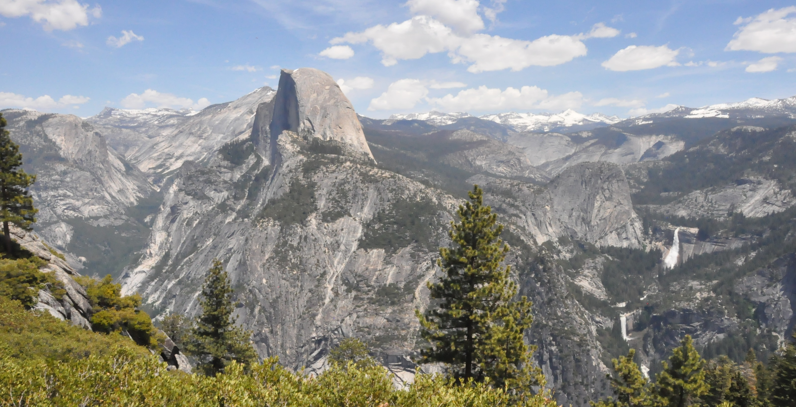
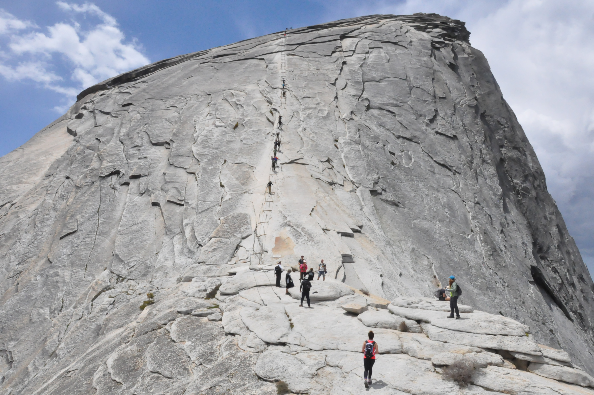

Half Dome is a granite dome at the eastern end of Yosemite Valley in Yosemite National Park, California. It is a well-known rock formation in the park, named for its distinct shape. One side is a sheer face while the other three sides are smooth and round, making it appear like a dome cut in half. The granite crest rises more than 1,444 m above the valley floor.
The Half Dome Cable Route hike runs from the valley floor to the top of the dome is 27 km round trip, with 1,460 m of elevation gain. The length and difficulty of the trail used to keep it less crowded than other park trails, but in recent years the trail traffic has grown to as many as 800 people a day. The hike can be done from the valley floor in a single long day, but many people break it up by camping overnight in Little Yosemite Valley. The trail climbs past Vernal and Nevada Falls, then continues into Little Yosemite Valley, then north to the base of the northeast ridge of Half Dome itself.
The final stage of climbing half dome is ascending using cables on the side of on Half Dome:
